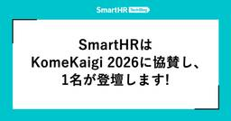
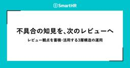

SmartHR Tech Blog
https://tech.smarthr.jp/
SmartHR 開発者ブログ
フィード

Chromaticのコストを下げたいっ！ —— TurboSnapが効かない原因と、その対策
SmartHR Tech Blog
こんにちは、SmartHRでプロダクトエンジニアをしている@nabeliwoです。 SmartHRでは、多くのプロダクトがChromaticを使ってVRT（Visual Regression Testing）をしています。詳しくは後述しますが、Chromaticは撮影したスナップショットの枚数で課金されるので、気づかないうちにコストが膨らんでいることがあります。私の所属しているチームが開発している給与計算機能でも、約720個あるストーリー（Storybookで、コンポーネントの表示パターンを1つずつ定義したもの）を、ストーリーの変更とは関係なくすべて撮影し直すビルドが半分近くありました。 調べ…
4日前

SmartHRはKomeKaigi 2026に協賛し、1名が登壇します！
SmartHR Tech Blog
こんにちは！ SmartHRのDevRel（Developer Relations）のnattyです。 SmartHRは、2026年10月31日（土）に新潟市のNINNO3で開催される「KomeKaigi 2026」に協賛し、私、nattyが登壇します！ 私はDevRelとして、主にエンジニアの登壇を支援しています。後押しする立場だからこそ自分も同じ土俵に立ちたいと考え、自らも登壇を重ねてきました。KomeKaigi 2026では、その経験と、登壇を通して学んだことをお話しします。 komekaigi.dev KomeKaigi 2026とは KomeKaigiは、新潟のおいしいお米とお酒を楽…
5日前

不具合の知見を、次のレビューへ —— レビュー観点を蓄積・活用する3層構造の運用 1
1
SmartHR Tech Blog
はじめに こんにちは。SmartHRでQAエンジニアをしているnotchです。 私が担当しているプロダクトでは定期的に不具合を振り返っていたのですが、得られた知見を次の仕様やテストケースのレビューに十分生かせていませんでした。 今回は、その知見をレビュー観点として整理し、3層に分けて蓄積・活用する仕組みと運用を紹介しようと思います。 解決したい課題 不具合の振り返りで得た知見をレビューで生かすには、個々の事象を「何を確認すべきか」という観点に整理し、必要な場面で参照できるようにする必要がありました。 しかし、そのための継続的な運用が定まっておらず、せっかく不具合から得た知見を十分に反映できてい…
5日前

新卒N年目の勉強会&交流会！#6 レポート
SmartHR Tech Blog
こんにちは！プロダクトエンジニアのna2keraです。 SmartHRは、2026年10月10日（土）に東京・六本木のSmartHR Spaceで開催された新卒N年目の勉強会&交流会！#6に協賛し、会場提供と懇親会のフード提供を行いました！ この記事では、イベントの模様と登壇内容をレポートします。 新卒N年目の勉強会&交流会！#6とは 新卒N年目の勉強会&交流会！は、新卒エンジニア同士が好きな技術について話す勉強会イベントです。普段は関わりにくい、会社を超えた横のつながりをつくる場として開催されており、初登壇や初めてイベントに参加する方も多く参加します。 今回の#6は拡大版として土曜開催となり…
10日前
給与計算を使う側だった私が、つくる側になって4ヶ月 —— 1社分の実務では見えなかったエンタープライズの難しさ
SmartHR Tech Blog
こんにちは！ 2026年6月に入社したプロダクトエンジニアのnobuです。給与計算プロダクトで、基盤機能を担当する開発チームに所属しています。 私は経理・労務の仕事を3年半ほど経験したあとエンジニアに転身し、エンジニアとしては8年ほどになります。入社して4ヶ月、思っていた以上にプロダクト開発以外の業務にも関わってきました。インターンのメンターや、SmartHR LT大会（1人5分ほどの短い発表会）の運営などです。 この記事では、給与計算を「使う側」から「つくる側」になって4ヶ月でやったことと、これまでの経験だけでは見えなかったことを振り返ってみます。 プロダクト開発 以前の私は、小さな会社で1…
11日前
データベースとコードの長期的なリファクタリングを安全に進めるための取り組み —— 従業員データの複雑さを解きほぐす
SmartHR Tech Blog
こんにちは、プロダクトエンジニアの山本（@kymmt90）です。SmartHRの人給基幹プロダクトの技術基盤部門に所属しています。 技術基盤部門において私が所属するユニットでは、SmartHRの従業員データに関する機能を開発しやすくするための改善を進めています。具体的には、従業員データの一部を保存するデータベースのテーブルと、そのテーブルを扱うコードの複雑さを減らすためのリファクタリングを進めています。また、この改善には長期の作業が必要になるという特徴があります。 本記事では、こういったデータベースとコードの長期的なリファクタリングを安全に進めるための方法について紹介します。ポイントは次の3点…
12日前
CPOとDirectorが語る、これからのプロダクト組織 —「AIの登場で、デザイナーの重要性はむしろ高まっている」—
SmartHR Tech Blog
こんにちは！ SmartHRで採用を担当している北林です。 2015年に提供を始めた「SmartHR」は、労務管理から勤怠、給与計算、タレントマネジメント、情シス、従業員ポータルへと領域を広げてきました。2026年度は、従業員向けやバックオフィス向けなど複数のAIエージェントを提供する方針も打ち出しています。 プロダクトの数が増え、AIが業務の前提を変えつつあるなかで、プロダクト組織のかたちも変わり始めています。 2026年1月には4つの事業領域を軸にした組織へと再編し、プロダクトデザイン組織も、各事業領域にプロダクトデザインの責任者を置く体制に移りました。さらに9月からは、CPOの安達さんが…
12日前
「AIの審査」で締めるチームビルディング —— ファシリテーターの負担ほぼゼロで、もうひと盛り上がり！
SmartHR Tech Blog
こんにちは！ SmartHRの給与計算開発チームで、プロダクトエンジニア（以降、PdE）のチーフをしている@diescakeです！ 私たちのチームでは、チームビルディングの一環でちょっとしたレクリエーション（※）を実施することがあります。この記事では、そのレクリエーションの締めに「AIによる審査」をひとつ足してみたら、企画の負担をほとんど増やさずに場がもう一段盛り上がった、という話をご紹介します！ 実際にやった2つのレクリエーションも一例として紹介するので、皆さんのチームでアレンジする際の、何かしらの参考になれば幸いです〜🙏 ※ 社内ではワークショップと呼びます。今回はカジュアルな事例なのでレ…
13日前
システムが正常でも、お客さまの業務は止まっているかもしれない。SmartHRのCREが挑む「顧客の可観測性」
SmartHR Tech Blog
こんにちは！SmartHR 採用担当の南石（@nanseki_o）です。2026年7月にSmartHRに2回目の入社をしました。 本日は、出戻りしたら爆誕していた「CRE」というロールについてインタビューした内容をお届けします。 CRE（Customer Reliability Engineering）という言葉を聞いたことはありますか。 技術的な問い合わせに対応するエンジニア、カスタマーサポートと開発チームの橋渡し役といったイメージを持つ方もいるかもしれません。 SmartHRのCREは2025年7月に誕生した組織です。お客さまからの技術的な問い合わせへの対応も担っていますが、それは活動の一…
17日前
名古屋Ruby会議05に協賛しました！——粋な出囃子と落語で彩られたトーク
SmartHR Tech Blog
SmartHRは、2026年9月19日(土)に愛知県名古屋市の大須演芸場で開催された「名古屋Ruby会議05」に協賛し、8名が参加、1名が運営に携わりました。 この記事では、参加したメンバーのnaitoh、delhi09、osyoyu、natty、そして運営として携わったsoulがイベントの模様をレポートします！ 会場の大須演芸場 目次 目次 名古屋Ruby会議05とは 運営 スポンサーLT 印象に残ったセッション 「Ruby のブロックが、GPU のカーネルになる」 @yujiteshima 「特殊変数大全」 @dak2 「System Test is dead, long live Sys…
18日前
Kaigi on Rails 2026に向けて「きみはどのハチ公？ 開発タイプ診断！」社内お披露目会を開催しました！
SmartHR Tech Blog
こんにちは、2026年4月にSmartHRへ新卒で入社したnose（のせ）です。 SmartHRは、2026年10月16日（金）・17日（土）にベルサール渋谷ガーデンで開催されるKaigi on Rails 2026にブースを出展します！ブースでは、「きみはどのハチ公？ 開発タイプ診断！」を開催します。開発の中で好きなことや、うれしいと感じる場面について答えると、今の自分に近いハチ公タイプが分かる診断です。Kaigi on Railsのコアコンセプトは、「初学者から上級者までが楽しめるWeb系の技術カンファレンス」です。診断も、経験に関係なく楽しんでもらえるようにしました。 イベントに先駆けて…
18日前
点を線にして、QA組織の次の「当たり前」をつくっていく
SmartHR Tech Blog
こんにちは、品質保証本部のtarappo です。 2024年9月にSmartHR 品質保証部のActing Managerとして入社して、現在は品質保証本部のDirectorとして働いています。 入社してからあっという間に2年が経ちました。 その間にいろいろなことを経験しつつ、さまざまなことに取り組んできました。 それらは別々の施策を次々と進めたというより、多くの「点」をつなぎ、組織として継続的に品質を高められる一本の「線」にしていく取り組みだったと考えています。 個々の取り組みについては、ブログや登壇などでその都度発信してきました。 今回はそれらの詳細を説明するのではなく、これまでの記事も参…
19日前
SmartHRはKaigi on Rails 2026に協賛し、30名が参加、3名が登壇、2名がオーガナイザーを務めます！ そして、ブース出展と、学生参加支援、事後勉強会も実施します!! 渋谷でハチ合わせ!!!
SmartHR Tech Blog
SmartHRは、2026年10月16日、17日に東京・ベルサール渋谷ガーデンで開催される「Kaigi on Rails 2026」に協賛します！ 当日はブースを出展し、社員30名が現地参加します。また、関係者3名が登壇し、2名がKaigi on Rails 2026のオーガナイザーを務めます。 あわせて、学生参加支援（記事公開時点で募集は終了）と、Kaigi on Rails 2026の事後勉強会の開催も予定しています。 kaigionrails.org 目次 目次 テーマ：「渋谷でハチ合わせ！」 協賛 ブース 学生スカラシップ 登壇 「Railsのためのパスキー実践入門 〜マルチテナントS…
24日前
PicoRubyKaigi 2026 Assembleにydahが登壇します —— オーガナイザーが紹介する当日の見どころ
SmartHR Tech Blog
こんにちは。SmartHRのR&Dユニットに所属するプロダクトエンジニアのydahです。大阪に住んでいてKyobashi.rbの主催や関西Ruby会議09のチーフオーガナイザーを務めました。 2026年10月31日（土）に浅草橋ヒューリックホール＆カンファレンスで開催されるPicoRubyKaigi 2026 Assembleに、SmartHRからわたしが登壇します。わたしはこのカンファレンスのオーガナイザーのひとりでもあるので、登壇のお知らせとあわせて、当日の見どころも紹介します。 PicoRubyKaigi 2026 Assembleとは PicoRubyKaigiは、小さなRubyKai…
25日前
YAPC::Tokyo 2026にydahが登壇します
SmartHR Tech Blog
こんにちは！ SmartHRのエンジニアの@ydahです。 2026年11月28日（土）・29日（日）に東京ビッグサイトで開催される「YAPC::Tokyo 2026」に登壇します！ 私は普段、Rubyのコミッターとして、Rubyの構文解析器の改善や、パーサージェネレーター「Lrama」の開発に取り組んでいます。今回はその活動ともつながるテーマとして、Perl・Ruby・PHPの文法ファイルを読み比べる発表をします。 yapcjapan.org YAPC::Tokyo 2026とは YAPC::Tokyo 2026は、一般社団法人Japan Perl Associationが主催する技術カンフ…
1ヶ月前
RubyKaigi 2026 follow upレポート —— SmartHRから3名が登壇し、ブースも出展！
SmartHR Tech Blog
こんにちは！プロダクトエンジニアのitojumです。 SmartHRは、2026年9月5日に東京都港区三田の株式会社IVRyで開催されたRubyKaigi 2026 follow upに協賛し、SmartHRのRubyKaigi 2026登壇者による発表のその後を報告し、スポンサーLT・ブース出展を行いました！ この記事では、イベントの模様と登壇内容をレポートします。 RubyKaigi 2026 follow upとは RubyKaigi 2026 follow upは、RubyKaigi 2026で「今後はこうしていこうと思っています」と言っていた人に、その「今後」を伺うイベントです。登壇…
1ヶ月前
第92回 Ruby関西 勉強会レポート
SmartHR Tech Blog
こんにちは、ydahです。普段はSmartHRでプロダクトエンジニアとしてR&Dユニットに所属しています。大阪に住んでいてKyobashi.rbの主催や関西Ruby会議09のチーフオーガナイザーを務めました。 2026年9月17日（木）に、第92回 Ruby関西 勉強会が開催されました。SmartHRは本イベントに協賛し、グランフロント大阪タワーAの34階にあるSmartHR大阪オフィスを会場として提供しました。 rubykansai.doorkeeper.jp この記事では、当日の様子をお届けします。 第92回 Ruby関西 勉強会の会場の様子 目次 目次 開催概要 スポンサートーク: Ra…
1ヶ月前
Roppongi.rb #46 がSmartHRで開催されました
SmartHR Tech Blog
こんにちは！SmartHRでプロダクトエンジニアをしているmatsugenです。 2026年9月10日（木）、SmartHRのオフィスで「Roppongi.rb #46」が開催されました。この記事では、当日の様子や登壇内容をレポートします。 まだまだ暑さの残る9月の夜、平日の仕事終わりにもかかわらず、多くのRubyistの皆さんにお集まりいただきました。 roppongirb.connpass.com 目次 目次 Roppongi.rbとは 参加人数 開幕 スポンサーLT 参加者LT created_atがレコード作成日時じゃなかった件：国枝桂亮さん MIDoRI開発進捗報告 9月号：Tosh…
1ヶ月前
Cloudflare Workers Tech Talks in Fukuokaに参加し、登壇しました！
SmartHR Tech Blog
こんにちは、SmartHRの @udzura です。福岡で好きなうどんは萬田うどんです。 今回、2026年9月10日（木）に福岡で開催された Cloudflare Workers Tech Talks in Fukuoka #2 に参加し、登壇しました。この記事では、イベントの様子と自分の発表内容、それに他の登壇者の発表から学んだことを紹介します。 主催のyusukebeさんから開始のご挨拶 Cloudflare Workers Tech Talks in Fukuokaとは Cloudflare Workers Tech Talks in Fukuokaは、Cloudflare Worker…
1ヶ月前
他職種の専門性を開発プロセスにつなぐ —— QAエンジニアとカスタマーサポートの協業で見えた、工程に応じた関わり方
SmartHR Tech Blog
QAエンジニアとカスタマーサポートが取り組む、顧客の知見を工程に応じて仕様に活かすための仕組みづくり こんにちは、SmartHR 品質保証本部 レバレッジ推進ユニットのgo-sanです。 前回の記事「開発プロセスに他職種の知見を届ける —— QAエンジニアによる仕組みづくりの現在地」では、カスタマーサポートチーム（以下、SP）が持つ顧客・業務知見をリリース前の品質づくりに活かすため、プロダクト要求仕様書（以下、PRD）のレビューや実装前のフィードバックを試している状況を紹介しました。 当時は、SPならではのレビュー観点を問いかけリストに整理している段階でした。その後、複数の開発案件で試したこと…
1ヶ月前
SREコミュニティイベントでLT登壇5連発！ CREが参加して見えてきたこと
SmartHR Tech Blog
こんにちは！ SmartHRのCRE（Customer Reliability Engineering）部 でマネージャーをやっている a-know（井上）です。8月下旬に夏休みを取ったのですが、6日連続で15,000歩くらい歩いた結果、左膝に爆弾を抱えてしまいました。昨年も同じようなことをしたのですが、そのときには問題なかったのですが⋯⋯年々体の衰えを感じずにはいられませんね。 さて、実はこの9月は SRE（Software Reliability Engineering） のコミュニティが異様に盛り上がっていたことに、みなさんは気づいていましたでしょうか？ 私が把握できただけでも、9月は以…
1ヶ月前
脅威をチームで洗い出す —— STRIDEを使った脅威モデリングワークショップ
SmartHR Tech Blog
こんにちは、SmartHR AI開発部のbiwakoです。先日、脅威モデリングワークショップを開催しました。本記事では、STRIDEを用いたワークショップの進め方と、実施を通じて得られた効果や気づきを紹介します。 開催のきっかけ 近年、攻撃手法の高度化や脆弱性悪用までの期間の短縮により、セキュリティリスクが高まっています。また、2018年にはCVE公開から悪用まで63日間（中央値）猶予があったのに対し、2024年以降はCVEの公開前から脆弱性が悪用されるトレンドが継続し、脆弱性悪用からCVE公開までの期間は拡大する傾向にあります。 "The mean time-to-exploit (TTE)…
1ヶ月前
Apollo Routerで途切れた分散トレースをつなぐ —— W3C Trace Contextとカスタムヘッダーを両立するまで
SmartHR Tech Blog
こんにちは。今年の7月、SmartHRにプロダクトエンジニアとして入社したmaminoです。 SmartHRでは、プロダクト開発基盤本部の業務連携基盤ユニットでEDP(Employee Data Platform)を主に担当しています。 2026年5月に公開した「「磨き上げる」ことから始まる基盤開発 —— マルチプロダクト戦略を支える従業員データ基盤」では、EDPの現在とこれからについてご紹介しました。 今回の記事では、EDPチームにおけるオブザーバビリティ向上の取り組みについてご紹介します。 具体的には、EDPで途切れていた分散トレースをつなぐために何をしたのか、という話です。 そもそもED…
1ヶ月前
「AIの活用をみんなの当たり前へ」を目指し「AIやっていき室」を発足しました
SmartHR Tech Blog
こんにちは、SmartHRでQAエンジニアをしている山下です。 普段はフロントシステムエリアの品質保証を担当しています。 今回は、社内でのAI活用を広げるために発足した「AIやっていき室」の発足の経緯と、最初の一歩として開催した「AIの使い方自慢会」について紹介します。 社内でAI活用を広げたいけれど何から始めればいいか分からない、という人に「SmartHRはこういう取り組みもやっているのか」という気づきを持ち帰ってもらえる記事を目指します。 AIやっていき室の発足の経緯 AIやっていき室の目的は、"AIの活用を“みんなの当たり前”へ" です。 AIの進化によりプロダクトづくりのあり方が根本か…
1ヶ月前
新卒エンジニアの1on1行脚 —— 立場を越えて話して広がった視座
SmartHR Tech Blog
はじめまして！SmartHR新卒一期生（2026年4月入社）のnose（のせ）です！現在はプロダクトエンジニアとして、情報システム部門（情シス）向けソリューションの開発をしています。 入社してから、自分のチームの中だけでなく、ビジネスサイド、事業戦略、エンジニア組織など、さまざまな立場の方に1on1や質問会をお願いしてきました。 この記事では、新卒エンジニアの自分が、新卒という立場を活かして、普段なら接点を持ちにくい人に話を聞きに行った「1on1行脚」のことを書きます。 1on1行脚は、最初から明確な目的があったわけではなく、「新卒の今なら聞きに行けるかもしれない」「せっかくなら顔を覚えてもら…
1ヶ月前
SmartHRは「技育プロジェクト」に協賛しています —— 学生エンジニアの挑戦を応援
SmartHR Tech Blog
こんにちは！SmartHRでエンジニア新卒採用を担当しているikuraです。 SmartHRは今年も 技育プロジェクト に協賛しています。 技育プロジェクトに参加される学生さんの熱意はとても高く、イベントに参加するたびに学生のみなさんから刺激をもらっています。 今回は、技育プロジェクトがどんなプログラムなのか、そしてSmartHRがなぜ協賛しているのかをご紹介します。 技育プロジェクトとは 技育プロジェクトは、株式会社サポーターズが運営する学年不問・参加費無料のエンジニアキャリア育成プログラムです。「技」術者を「育」てる、で技育。 技育プロジェクトは主に以下の4つのイベントで構成されています。…
1ヶ月前
自分の施策を自分で評価する —— 結果を見る前に決めておいたことと、そこから外したこと
SmartHR Tech Blog
こんにちは。技術統括本部でアジャイルコーチをしている shooen です。 SmartHRでは「リリース後の学習ループ」を回すためにパイロットプロジェクトに取り組んでいます。その途中経過を2026年4月に Product Management Summit で発表し、5月にはその報告と他講演との接点を記事にしました。 product-management-summit.findy-tools.io tech.smarthr.jp プロジェクトでは、観測結果の確認と判断の場「Decision Review」（旧称：Learningレビュー）と、それらを記録する「Decision Log」の2つを…
1ヶ月前
AIアシスタントにレッドチーミングを導入して学んだこと
SmartHR Tech Blog
こんにちは。AIアシスタントチームでプロダクトエンジニアをしているmizunaoです。 SmartHRには、AIアシスタントという機能があります。就業規則や社内マニュアルをあらかじめアップロードしておくと、「有給休暇は何日前までに申請すればいい？」のような従業員からの質問に、その文書の内容に基づいて答えてくれるAIチャットボットです。 AIアシスタントは、従業員が自由に文章を入力でき、その内容に応じて答えを返します。この自由さは、裏を返せば攻撃の入り口にもなります。これまでも開発者が攻撃的な質問を投げてセキュリティチェックを行ってきましたが、確認はすべて手作業でした。プロンプトやモデルを変える…
1ヶ月前
Claude Codeで開発期間を2.5か月から1か月に縮めた「ハーネス」の設計手法
SmartHR Tech Blog
こんにちは。SmartHRの情シス領域でプロダクトエンジニアをしているaniyamaです。 入社して3か月が経ちました。この3か月で取り組んだのは、情シスプロダクトに新しい機能を1つ追加する開発です。まだ世に出していない機能なので、以降は「今回の機能」と書きます。当初の見積もりは実質工数でおおよそ2.5か月ほどでしたが、Claude Code向けの「ハーネス」を先に作ってから開発を始めたところ、大きな手戻りがないままほぼ1か月で実装を一通り終えられました。 この記事では、そのハーネスをなぜ作ったのか、どういう処理の流れになっているのか、そしてうまくいった点と工夫した点を紹介します。 ハーネスは…
2ヶ月前
「あつまれ！若手エンジニアのLT＆ゆるっと交流会」に参加・登壇してきました！
SmartHR Tech Blog
こんにちは！プロダクトエンジニアのitojumです。 2026年8月28日にモビルス株式会社が主催した「あつまれ！若手エンジニアのLT＆ゆるっと交流会」というイベントに参加・登壇してきました。 この記事では、イベントの模様や登壇内容をご紹介します。 「あつまれ！若手エンジニアのLT＆ゆるっと交流会」とは このイベントは、若手エンジニアの交流を目的に開催されました。今回は新卒研修が終わった26新卒エンジニアを対象に、研修や業務での学びを共有し合うLT会が行われました。 前半のLTセッションでは、計6名の登壇者が研修で得た知見や現場で触れた技術について5分間で発表しました。後半の懇親会では軽食を囲…
2ヶ月前